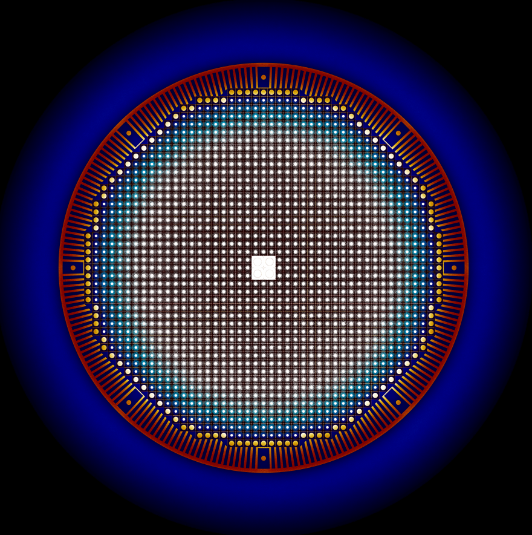

Advanced Reactors and Fuel Cycles
University of Illinois at Urbana-Champaign
This group is led by Kathryn Huff, an Assistant Professor at the University of Illinois at Urbana-Champaign in the Department Nuclear, Plasma, and Radiological Engineering. We design and conduct simulations to understand and improve the safety and sustainability of nuclear energy.

Coupled Multiphysics of Advanced Reactors
Advanced nuclear reactors often involve complex geometries, unique materials, and new physical regimes. To simulate the coupled physics in such designs, current tools must be extended to capture those geometries, materials, and regimes. Our work focuses on extending current tools with features essential to simulating advanced reactor multiphysics.
Fuel Cycle Analysis
Our nuclear energy future may involve a mixture of technologies, reprocessing schemes, and waste management strategies. Deployments may be driven by politics or demand, the options may be constrained by complex logistics, and the assessment of impacts requires analysis at scale. Our work focuses on modeling, simulation, and analysis of the global nuclear fuel cycle, with an emphasis on sustainability.
Advanced Computation
A crosscutting theme of our research is an emphasis on advancing methods and software for computational nuclear engineering. Simulations of reactors and fuel cycle systems are sufficiently complex that sophisticated scientific software and high-performance computing resources are essential to understanding and improving them. Accordingly, the Advanced Reactors and Fuel Cycles group is proud to be affiliated with the University of Illinois National Center for Supercomputing Applications and its Blue Waters computing facility.
News
Updates from the research group.
Two ARFC Graduate Students Recognized with ANS Scholarships
Gyu Tae Park Recognized for Outstanding Undergraduate Research
Bae Presents Poster at GLOBAL 2017
Andrei Rykhlevskii Recognized with ANS Scholarship
Jin Whan Bae Recognized for Outstanding Undergraduate Research
Kathryn Mummah Rakes in Awards
New Group Members Join ARFC
Huff Featured in NPRE News
ARFC and ERGS Receive NEUP R&D Award
Huff Plans to Join NPRE
subscribe via RSS
License
This website and all its contents are CC-BY-4.0 licensed. So, you may share and adapt this material as long as you give appropriate credit, provide a link to the license, and indicate if changes were made. You may do so in any reasonable manner, but not in any way that suggests the licensor endorses you or your use.

Advanced Reactors and Fuel Cycles by ARFC Research Group is licensed under a Creative Commons Attribution 4.0 International License.
Based on a work at github.com/arfc/arfc.github.io.